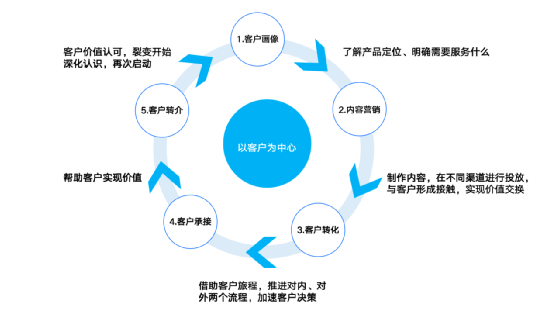
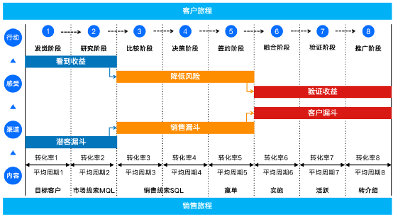
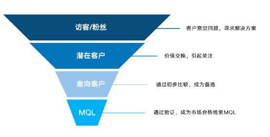
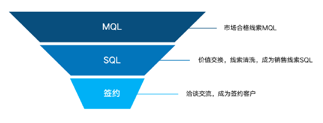
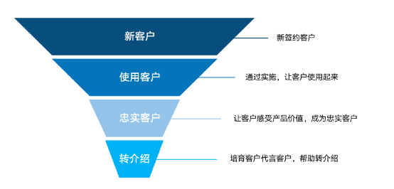
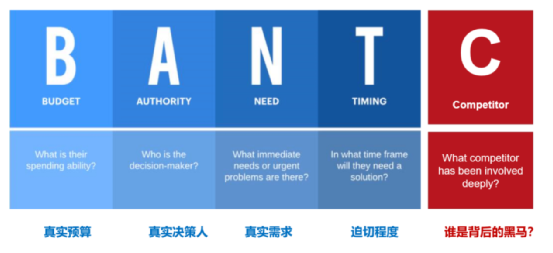
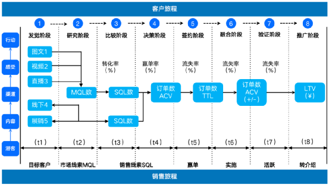
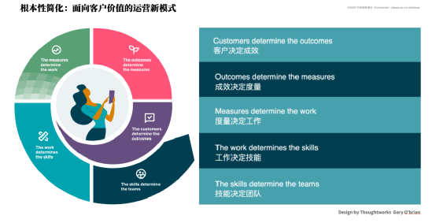
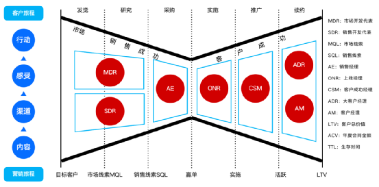

前一段时间跟朋友聊到B端营收增长压力较大，非常依赖SLG销售模式，收入来自几个超级销售，想进一步扩大营收，遇到以下困境：
1）企业面临着营收增长的巨大压力
随着公司发展，希望进一步扩大营收，目前比较好办法是增加销售人员，尽管增加销售人员规模是比较好的方式，造成人力成本支出加大、管理难度增加，进一步扩大营收规模的压力大。
2）企业销售增长难以控制
传统的SLG营销依赖于几个超级英雄能力，非常依赖个人表现，销售规模很难预测，若超级明星离职，公司将面临巨大的损失。
3）企业增长已经开始乏力
传统销售获客难度逐步变大，很多情况下是客户主动找到他们，而不是主动获客得到，增长出现乏力。
经知名机构调研，88%的B2B商业交易从线上开始，75%的客户将社交媒体作为产品研究渠道，客户心智在发生改变，越来越多的B2B交易从线上开始，而社交媒体也成为客户研究的重要渠道。客户越来越主动自主获取信息，买方逐步成为主导市场购买的主动权。此外，产品丰富、竞品众多，供求关系正在发生改变，从卖方市场逐步演变为买方市场。因此，仅靠SLG增长已经无法满足企业的需求。
在这些挑战面前，该如何应对，能够提升营收，探讨通过优化解决传统SLG销售模式外，也一起沟通探讨了数字化营销，一致认可数字化营销重要性。接下来，我们需要思考如何实现数字化营销落地，帮助企业实现成倍的营收增长。将与您探讨如何形成以客户为中心的正确认知，通过数字化营销五步法，目标层层递进方式实现营收成倍增长。
同时，我们还会探讨数字化营销工具和组织等方面的问题，希望能够为您企业实现成倍增长打开思路。
一、建立以客户价值为驱动的正确认知
以客户为中心的理念广为人知，口号洪亮，“以客户为中心”、“全员客户成功”等，但实际操作中却往往违背初衷，受限于KPI、营收增长、利润和管理等因素，难以真正贯彻以客户为中心的理念。然而，市场正在发生变化，从卖方市场转向买方市场，ToB数字化产品的增长又迫使企业回归以客户为中心，正确认知的建立变得尤为关键。
一是以客户视角为起点，站在客户角度审视问题
从卖方市场转向买方市场，关键在于深入理解客户的痛点、需求和采购过程。首先，我们需要换位思考，如同趴在墙上的苍蝇，去了解客户的愿景、目标以及达成愿景的障碍。在此基础上，我们才能提供真正满足客户需求的解决方案。当客户成交后，顺利完成交接，他们才会更愿意持续复购。
二是以客户为中心的营销，才是双赢
以客户为中心的营销并非易事。尽管我们可以从客户的角度出发，发现、分析和解决问题，但面临内部KPI的压力，我们往往会不得不回归自我中心，将不合适的产品卖给客户。这样做不仅伤害了客户，也损害了我们自己的利益。
回顾2001年春节联欢晚会上的《卖拐》小品，赵本山通过巧妙的言辞将双拐卖给了一位健康的陌生人，结果却是范伟觉得自己智商有问题，甚至让赵本山承担责任。这实际上是一个双输的交易。对于ToB数字产品生意而言，持续的续约和复购是至关重要的。只有以客户为中心的营销才能带来真正的成功。
销售人员同样需要理解这一理念，认识到公司的发展需要客户的成功，了解客户生命周期价值，为客户创造价值，帮助客户实现愿景和目标，从而提高客户管理水平和效率。只有这样，我们才能实现双赢的销售。
三是营销为客户创造价值
ToB数字产品的商业逻辑中，客户成功是业务可持续增长的关键。这是因为我们的服务能够持续地为客户创造价值，特别是通过SaaS订阅制的方式。在构建数字化营销体系时，同样需要以客户为中心，从客户的角度思考和解决问题，描述客户的全程体验，包括从客户认知到采购、使用再到选择继续使用的过程，最终是帮助客户达成愿景及目标、让其业务实现增长，帮助客户成功，为客户创造价值。
为了实现真正的ToB数字化营销，不仅需要对企业内部的销售流程进行推进，更重要的是推进潜在客户的认知流程。只有将这两个流程打通并流动起来，借助内容和渠道让企业与客户进行价值交换，才能让客户感受到价值并采取行动。所有行动、目标、度量指标等都应该指向客户，并致力于为客户创造价值，这才是ToB数字化营销的根本。
二、数字化营销落地五步法
实现ToB数字化营销就是将两个流程打通并流通起来，与客户进行价值交换，如何赢得客户信赖，顺利完成签约？具体我们来看看落地数字化营销的五步法。

第一步：聚焦目标客户（ICP）
落地数字化营销的第一步是明确目标客户，这需要基于产品定位和现有客户资源等因素确定ICP理想客户画像，并细分领域客户画像的利基市场。可以通过企业规模、行业、区域、人员规模、营收、决策链条和融资动态等标签进行分析梳理，还可以结合竞争对手分析、调查研究和数据分析等方法，找到与我们有相同待办任务的ICP理想客户画像。
明确目标客户有助于我们清晰地了解哪些客户需要重点服务，哪些可以主动放弃；明确目标客户后，可以筛选出合适的成功标杆客户，向成功客户进行调研，了解产品给客户创造的价值，同时向成功的企业调研客户旅程、绘制客户旅程，深入了解目标客户的决策流程；明确目标客户后，可以结合公司关键资源，挖掘新客群，如在已有客群中进行筛选。
第二步：做好内容营销
数字化营销的关键一步是内容营销，理解产品定位、目标标杆客户，向成功客户调研价值，做好内容准备，向不同渠道投放内容，让客户感受价值，使得客户感受到价值，获取流量，有效流量越大成功越大。
首先，内容准备要紧紧围绕目标客群和客户旅程等，向标杆成功客户要价值，为客户创造具有价值的相关内容，详细可看《价值营销是B端产品数字营销的最佳载体》。这些内容可以是品牌宣传类的专访、短案例和宣传片，也可以是获客类的内容，如白皮书、案例集合、直播PPT和先进方法论等。在准备内容时，必须以客户价值为优先考虑因素，避免成为内部宣传。
其次，内容投放需要结合产品和公司关键资源，在适合的渠道进行投放。这些渠道包括公众号、SEM/SEO、抖音、快手、视频号、线上直播、线下活动和展销等等。在投放过程中，要减少摩擦，每一次与客户接触都是我们向客户进行的一次价值交换。利用客户旅程加速推进客户决策。
最后，要做好投放分析，对每个渠道和触点进行数据分析，建立销售漏斗的转化监控分析体系。从客户的角度出发，确保决策都有数据支撑。分析哪个渠道和哪个内容最有效，找出适合的路径。
内容营销是最容易做的也是最难的一部分，现在甚至可以借助AIGC产生内容，大大降低内容营销门槛。无论如何要注意的是一定要服务于企业目标和业务目标，与客户进行价值交换，围绕客户旅程打造不同的内容，加速推进客户决策，完成转化。
第三步：做好客户转化
在数字化营销领域，做好转化是最为关键且具有挑战性的一步。它决定了潜在客户是否能成为有效的客户。要实现这一目标，我们需要制定相应的运营策略，打通内外流程，进行价值交换，引导客户按照关键步骤进行交互，降低客户学习成本与摩擦，从而提高客户满意度和忠诚度，从而降低客户流失的概率。
对于ToB客户而言，他们与ToC客户的获客成本和转化周期有所不同。因此，我们必须关注客户价值交换，搭建基于客户旅程的推进机制，回答客户在不同阶段的问题，以简单易懂的方式提供有用信息，帮助潜在客户迅速完成决策过程。根据客户旅程地图，我们可以了解客户与企业互动的基本方式，从而戳中客户的痛点，有针对性地塑造产品和服务的价值，与客户产生价值交换，能够帮助客户达成愿景与目标。
为了更好地站在客户视角下优化销量旅程，我们需要运用AARRR模型。该模型将客户发觉到实际使用旅程划分为潜客漏斗、销售漏斗和客户漏斗三个阶段。我们应该重视每个阶段的转化情况，通过优化渠道、内容、产品、客户体验和触点等方面，达到优化销量旅程的目的。同时，我们还需要关注每个阶段的转化情况，形成内外联动的漏斗模型，贯穿客户全生命周期。

要非常重视每个漏斗各个节点的转化情况，贯穿客户全生命周期，从潜客到客户，再到忠诚客户，横跨市场、销售、客户成功三个部门，形成内外联动的漏斗模型，要做好每个节点的转化情况，下面具体看看三个漏斗情况。
1）潜客漏斗
从一个陌生访客变成MQL线索的过程。客户在实际工作中遇到问题时，通过关注我们的公众号、视频号等内容，赢得我们的好感并关注。然后逐步成为潜在客户，通过获取更专业信息建立初步信任，最终成为意向客户。意向客户可通过行为打分和补充完整信息，成为一个合格的MQL线索。

2）销售漏斗
从一个合格的市场线索MQL到客户签约，这是一段经过SDR筛选后的销售过程。通过线上或线下的洽谈、方案沟通、产品讲解和演示等环节，识别客户预算并实现价值交换，与客户达成采购意向。随后，双方进行商务谈判并签约，成功成为签约客户。

3）客户漏斗
从签约客户到忠实客户，是客户承接过程中至关重要的一步。为了让客户真正使用我们的产品，我们需要做好客户承接工作。而使用产品并不是终点，我们还要让客户体验产品的价值，并愿意转介绍给他们的朋友。对于ToB产品而言，这非常重要，因为它是我们获取新客户的重要来源之一。

第四步：做好签约客户承接
恭喜客户签约成功！接下来，我们需要做好承接工作，确保客户交付并呈现产品价值。以下是几点需要注意的事项：
客户交接：从销售部到实施部，务必做好客户信息交接，让接收方清楚了解客户需求，避免信息不同步导致交付周期过长或失败；
制定SOP：根据产品和客户规模制定不同SOP,以客户价值为导向，制定实施目标和计划，有序推进客户实施，确保客户成功交付并体验到产品的价值。，让客户快速体验产品价值；
使用价值报告：实施完毕后，向客户展示产品带来的价值报告，特别是达成客户愿景目标的价值。
第五步：做好客户转介绍
ToB客户转介绍是指现有的ToB客户向其他企业或个人推荐您的产品或服务，以帮助您获得新的潜在客户，是数字化营销中非常重要的一步，客户实施交付完毕后，能让客户感受到价值之时能自愿做好转介绍工作。以下是一些建议，可以帮助您做好ToB客户转介绍：
提供优质的产品和服务：首先，您需要确保您的产品和服务能够满足客户的需求，并且提供优质的用户体验。只有当客户对您的产品和服务感到满意时，他们才会愿意向其他人推荐。
建立良好的关系：与现有的ToB客户建立良好的关系非常重要。通过与他们保持联系、回答他们的问题并提供支持，您可以建立信任和忠诚度。这将使他们更有可能向其他人推荐您的产品或服务。
提供奖励计划：提供奖励计划可以激励现有的ToB客户为您推荐新客户。这些奖励可以是折扣、礼品或其他形式的回报，以感谢他们的推荐。
提供易于分享的信息：确保您的营销材料和网站信息易于分享。客户可以通过社交媒体、电子邮件或短信等方式轻松地分享您的信息，从而帮助您获得更多的转介绍。
及时跟进：一旦您获得了转介绍，及时跟进是非常重要的。通过与新客户保持联系、回答他们的问题并提供支持，您可以迅速建立起与他们的信任关系，从而提高他们成为忠实客户的概率。
ToB客户转介绍需要您提供优质的产品和服务、建立良好的关系、提供奖励计划、提供易于分享的信息以及及时跟进。如果您能够做到这些，那么您就可以获得更多的转介绍，并扩大您的业务范围。
三、数字化营销目标层层递进
ToB数字化营销是一个持续探索的过程，需要不断迭代优化并逐步提升，目标层层递进。从获取客户线索(MQL)开始，逐步升级获取市场线索(SQL),最终实现营收增长目标，将传统营销演化为数字化营销。即使在未来的道路上遇到重重困难，也要保持初心，勇往直前。
目标一：获得市场合格线索（MQL）
在数字化营销的初期阶段，我们的目标是获得尽可能多的客户市场合格线索(MQL)，能为之服务客户的潜在数量。线索数量是衡量这一目标的重要指标。为了获取这些线索，我们需要通过开源引流的方式，投放内容，如内容营销和线下活动等，从公域中吸引流量并导入到我们的官网或公司自营阵地，要将这些公域流量转化为可触达、可转化的私域流量，通过私域中的良好互动让客户成为能够被我们联系上的线索。
在这个阶段，需要为产品和公司资源制定一个相对合理的线索数量目标，并定期复盘总结，不断优化每一次活动、每个渠道和每个环节的数据转化情况。
我们需要关注内容、渠道和触点摩擦等方面的优化，以找到与我们产品相匹配的最优路径和方法。同时，我们要注意避免为了流量而盲目追求，涌入大量并非我们所需的流量。这不仅会耗费大量人力和资源进行线索清洗，还可能导致推荐型公域阵地(如抖音、快手和视频号)上推送不适合的内容，给我们的品牌打上不良标签，合适的内容可能无法推荐给合适的客户，甚至导致我们的账号被废除，需要从头开始。
目标二：获得销售合格线索SQL
在实现目标一的过程中，我们可以获得大量符合市场标准的线索MQL。然而，将这些成批量的线索直接提供给销售人员可能会给他们带来较大的负担，而且线索质量不高，转化率低，导致浪费许多无用功以及引起不必要的矛盾。
为了实现目标二，我们需致力于获得高质量的销售合格线索SQL数量和质量，以帮助企业创造价值。为此，我们应对MQL线索进行进一步筛选，识别出具有购买意向且优质的潜在客户后再转交销售人员。我们可以引入SDR角色和MarTech工具，对MQL线索进行电话、邮件、短信等方式的联系触达，并结合BANTC销售模型对客户进行评分，如：
B-预算：可以从哪里筹集，有先例吗？- 10分
A-决策人：谁是PM，谁是最终决策人？- 20分
N-US：人数、簇群、场景匹配，3个以上。- 30分
T-预计时间：2-3个季度内。- 20分
C-竞争对手：现在过去有无。- 20分。

高于一定分数的线索才转交给销售人员跟进，并对是否成交进行标记，以便对线索进行追踪及分析总结，找到更符合产品高质量标准的合格线索。
这个阶段的关键在于如何赋能销售人员，减轻他们的负担。首先，我们需要提供高质量的SQL线索；其次，我们需要高效地传递信息，例如向销售人员提供关键行为、画像和感兴趣的相关内容等。这有助于销售人员作出合理的决策，顺利完成签单。
同样重要的是，我们要定期复盘总结分析，结合公司的产品特点、关键资源等以及利用客户旅程，探索如何在各个渠道、动作、内容和触达等方面更有效地筛选出合适的SQL线索。
目标三：获得营收成倍增长
在实现前两个目标的基础上，我们对数字化营销已经有了一定的理解，为实现目标三——营收成倍增长打下了坚实的基础。为了进一步提升数字化营销水平，我们需要站在全局的视角审视整个数字化营销过程。
首先，我们要站在客户的角度，全面关注客户的全旅程，与客户进行价值交换，探讨如何帮助客户推动采购决策流程，提高赢单效率。其次，我们需站在公司内部的角度，审视销售旅程，优化内部流程以实现高效运作，从而帮助客户尽快达成价值创造。

在这个过程中，我们需要打通两个流程，同时关注全局数据，实现跨部门高效协同，协助客户完成价值创造，形成闭环体系，包括客户旅程闭环、数据闭环和业务闭环。这样一来，我们就能直观地看到数字化营销所带来的客户和公司的业务价值。
能够最直观看到数字化营销带来的价值，可跟踪追溯每一场活动、展销等获得的潜客多少、有多少成交且客单价多少、之后有没有复购且金额多少、是否帮忙转介绍等等。通过对数据的监测，我们可以清楚地了解投入产出的情况，找出最合理、最有效的投入方式和内容，并通过不断迭代优化工作环节，实现精细化运营和提升。随着每个环节优化提升，哪怕每个月的1%增长，通过12个月的复利效应实现最终业绩的大幅增长。
四、数字化营销组织
建立以客户为中心的运营模式就是要转向客户价值主张和交付的运营模式，比较认同ThoughtWorks研究结果，这个运营模式即“客户决定成效->成效决定度量->度量决定工作->工作决定技能->技能决定团队”的运营模式，具体请看下图：

ToB运营的核心是以客户为中心，为客户创造价值驱动整个工作模式。因此，我们要以客户为起点，明确客户价值的度量指标，并制定相应的工作、流程和机制来实现这些指标。这需要我们掌握相应的技能，包括内部沟通与协作流程等，以设计出高效的运营组织，如下图所示：

以客户为中心的运营模式是最重要的一环也是最难的一环，相信成熟组织目前运转良好，突然改变将面临诸多不利因素且会遭到部分人反对，造成失败的风险，可从现有组织中抽到人员组建数字化营销攻关小组，如在市场部中试点，落地数字营销。
五、数字化营销工具
ToB数字化营销是复杂的，要有相应的数字化营销工具，如MA营销自动化、SCRM社交客户关系管理、CDP客户数据平台、CRM客户关系管理、CSM客户成功管理等，工具使用是要基于数字化营销方法来付诸实践，须以客户为中心建立完整的销售管理流程，并将每个环节数字化，以更好地洞察和分析市场趋势，找到问题所在并提升转化率，工具使用得当将效率大幅提升。
CDP（Customer Data Platform）：客户数据平台，收集不同来源的客户数据，并对客户统一打标签、整理。
MA（Marketing Automation）：自动化营销，提供各种营销内容的分发和追踪，了解客户的行为，用于获客和孵化。
SCRM（Social Customer Relationship Management）：社会化客户关系管理，旨在通过提供个性化和引人入胜的体验，在不同的社交媒体渠道上建立和维护强大的客户关系。这种方法有助于企业更好地了解客户的需求、偏好和行为，并及时有效地回应他们。
CRM（Customer Relation Management）：客户关系管理，用于帮助企业管理与客户和潜在客户的互动。CRM系统旨在帮助组织了解客户的需求、偏好和行为，并提供个性化和有效的响应，便于组织内居于客户进行协同管理。
CSM（Customer Success Management）：客户成功管理，可跟CRM协同，对已签约的客户进行全生命周期管理，实现客户成功与续约、转介绍等。
使用工具比较多，需结合公司实际情况来统筹规划来使用相应的工具，会让我们数字化营销效率大幅增长，加速帮助我们营收成倍增长。
小结
ToB数字化营销之路相信并非一撮而就，除了需要完成数字化营销基础建设，还须通过扎实的准备工作，最终实现新的变革，都值得尝试探索、深度挖掘。未来，希望越来越多公司通过五步法落地数字化营销，目标层层递进，打造以客户为中心、为客户创造价值的的数字化营销体系，实现营收成倍增长，并不断完善升级，效率和效果越来越佳，甚至成为智能化营销。
品牌、产品也是最好数字化营销获客工具，在利基市场中占据有利位置，成为细分客群中最优秀产品，占据用户心智，客户选择工具时，第一时间想起我们，那么数字化营销会事倍功半。
这里给一点小小建议，一是产品未验证前，即未找到产品Aha时刻、验证产品PMF，先打磨产品同时探索数字化营销；二是传统SLG销售模式优势可继续保留，数字化营销可作为新的增长，围绕客户旅程逐步优化完善，建立适合自身产品的数字化营销。希望能打开您的思路，未来实践中能得以应用，顺利落地数字化营销，企业营收增长成倍增长。